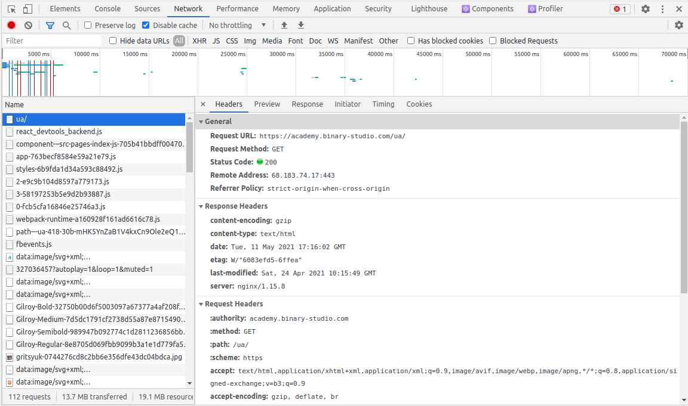
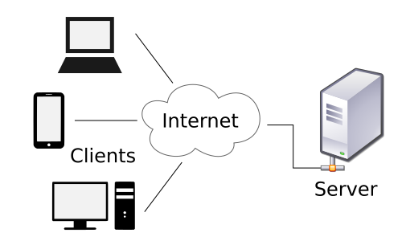
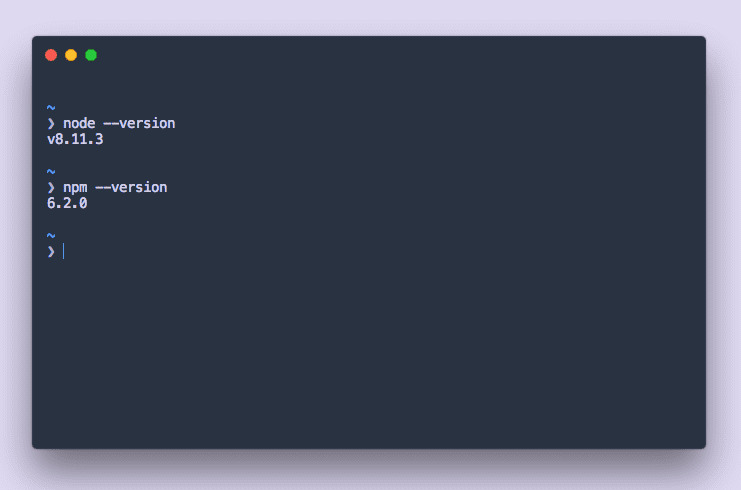
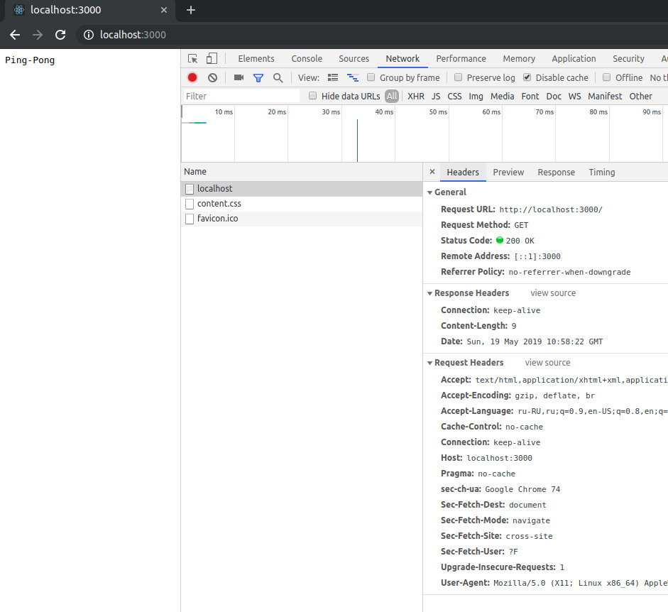
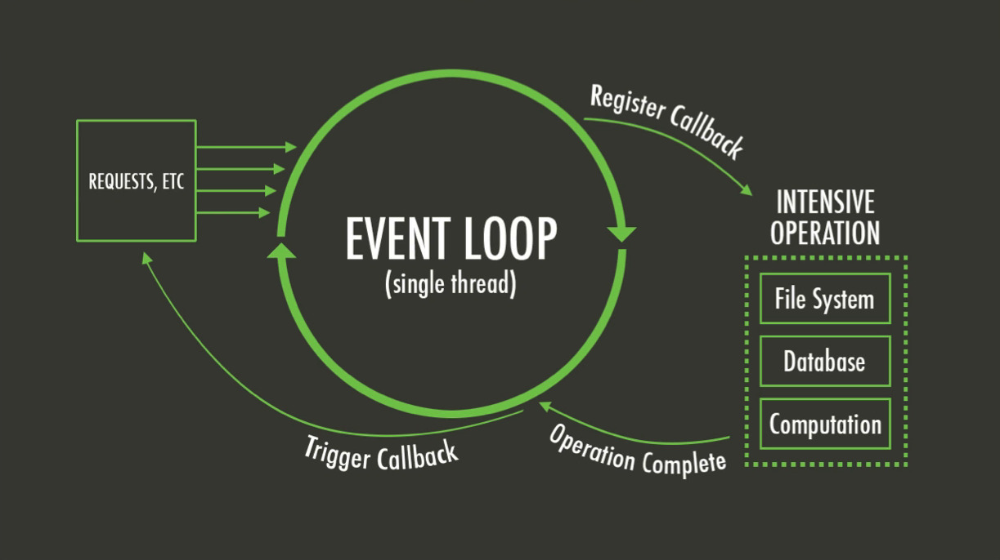
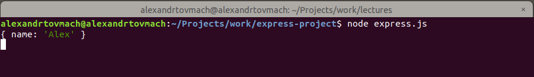
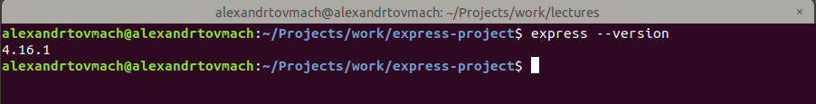
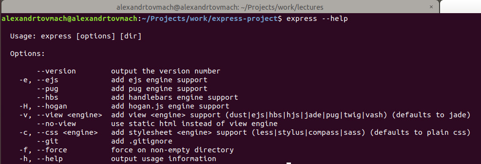

Express yourself with Node.js
{kind=link}
Вспоминая себя на месте студента, я постарался не нагружать лекцию лишней и трудноусваиваемой информацией, которая не пригодится тебе в ближайшие пару месяцев. С другой стороны, разбираться в деталях это похвально поэтому, для любознательных, я приложу ссылки на материалы и статьи. Лекция разделена на блоки, которые максимально независимы друг от друга, поэтому если прочитав заголовок, понимаешь что к чему, смело переходи к следующему блоку.
Желаю удачи!
Студент понимая, что простая страничка начинает разрастаться в серьёзное приложение с бизнес-логикой и управлением пользователями, а так же не имея возможности хранить большие объемы данных на клиенте, решает что пришло время бекенда
И так как студент пишет на JS, то и выбор для технологии становится очевидным ― Node.js. Осталось только самая малость ― изучить эту технологию.
Теория
Difficulty: Как реклама на YouTube ― можно пропустить. Objectives: Понять что такое сервер, где его место в web и как с этим жить.- Клиент ― это может быть браузер или любое другое программное обеспечение посылающее запросы серверу.
- Сервер ― это программа или её часть, взаимодействующая с клиентом по принципу запрос-ответ на основе HTTP-протокола, отправляя запрашиваемые данные или файлы на клиент.Когда web-разработчик говорит слово "сервер" он подразумевает "веб-сервер". То же самое применимо к "клиенту", "приложению" и т.д.
- HTTP-протокол ― набор правил о передаче данных в интернете.
- HTTP-метод ― указывает на то какую операцию следует выполнить с данным ресурсом. К основным можно отнести GET, POST, PUT, DELETE ― их немного больше, но это базис, которого тебе хватит на первое время.
- HTTP-статус ― приходит вместе с ответом от сервера и говорит о статусе запрашиваемой операции. Наиболее часто используемые 200, 301, 401, 404, 500.
Web теория
Рассмотрим на примере как же работает Web:- пользователь открыл браузер / запустил клиент
- пользователь открыл ссылку / по HTTP отправил GET запрос на сервер
- сервер обработал запрос / определил что запрашивается файл и нашел его
- 
Если ты пишешь на JS и уже сверстал свою первую HTML-страничку, значит с клиентом ты знаком достаточно. Здесь мы будем рассматривать работу стороны сервера(вообще-то мы рассматриваем сервер из-за того что это как-бы тема лекции, но не важно).Сервер ― "что?" и "зачем?"
Простыми словами, когда пользователь вводит запрос в адресной строке, браузер запрашивает данные на удаленном компьютере (сервере) по HTTP. В ответ он получает файл или данные, для отображения их в браузере.Для хранения и обработки всех ресурсов использующихся в вебе. Неважно, будь то одинокая статическая страничка или целый Facebook, всё размещено на удаленных серверах или хостингах, и показывается пользователю только по его запросу.Сервер в современном вебе выполняет множество функций по обработке и сохранение информации, работает со статическими файлами и конфиденциальными данными, к которым не должен никто иметь доступа, производит ресурсозатратные расчеты, которые слишком тяжелы для клиентской стороны и ещё много всего. Поэтому в зависимости от сложности проекта и решаемых задач, для удобной работы и увеличения КПД сервер будет строиться по определенной архитектуре, монолитная или микросервисная.
История Node.js
Любишь хоку?:Райан Даль,
2009 год,
искра, буря, безумие — Node.jsИменно в 2009 была опубликована первая версия Node.js. После были некоторые перипетии с правами, но нам это не так интересно, как причины почему Node.js был написан именно под JavaScript:
JavaScript — язык клиента#1
Как результат огромное комьюнити, желающих писать код на сервере на уже известном им языке.Event Loop#2
JavaScript это однопоточный язык, что значит что все операции как синхронные так и асинхронные выполняются в едином потоке, который никогда не блокируется. Это и является основой отказоустойчивости Node.js.V8#3
Движок разработанный командой Google Chrome, для улучшения работы JavaScript в их браузере. Он очень быстрый и мощный, потому что написан на C++. Node.js использует двигатель V8 вне браузера, и это позволяет Node быть очень эффективным.И сейчас, благодаря всем этим факторам, мы можем создавать полноценные веб приложения используя JavaScript как на клиенте, так и на сервере.
Подготовка
Difficulty: Как установка Windows ― всё просто, но что-то может пойти не так. Objectives: Установить Node.js на ПКДля того чтобы начать процесс установки, достаточно перейти на официальный сайт https://nodejs.org, и скачать установочный файл для своей операционной системы и далее следовать инструкциям по установке.
После установки обязательно перезагрузите компьютер🖥️
Недостаточные права⚠️
Неправильные переменные окружения🚧
Наберите следующие команды:
# Вывести версию Node.js
node -v
# Вывести версию npm
npm -vтвои версии могут отличаться в большую сторону
Заметили npm? Мы же не устанавливали его? Это пакетный менеджер разработанный командой Node.js, и поставляется в комплекте для удобной работы с модулями. Мы поговорим о нём детальнее в следующем блоке, а сейчас главное убедится в его работоспособности.
Пакетные менеджеры
Difficulty: Как учится играть в карты ― понять и запомнить кто за что отвечает. Objectives: Разобраться в терминологии и поработать с пакетами с помощью npm.- Модули (
modules) — это части программы/кода вынесенные в отдельные блоки для дальнейшего переиспользования. - Пакеты (
packages) — это сборник модулей. - Пакетные менеджеры ― инструмент для установки, удаления, обновления, версионирования и валидации пакетов и модулей.
Что за "пакеты" и зачем им нужны "менеджеры"?
1. В своем проекте ты написал функцию для сортировки массива, и переиспользуешь её в нескольких местах.
Поздравляю, это почти пакет/модуль2. В дальнейшем ты решил что эта же функция может помочь кому-то ещё, поэтому публикуешь её на StackOverflow как ответ.
Сейчас твой пакет/модуль в открытом доступе и другие разработчики могут попросту взять и скопировать его.3. А что если твоё решение более масштабное и занимает 400 строк кода? 500 строк? 1000?
Не очень то и удобно копировать такие объемы руками
(хотя фронтендщики со своими jQuery-слайдерами поспорят).4. Поэтому лучше правильно оформить свою функцию и опубликовать в удаленном хранилище ― npm.
Теперь остальным программистам достаточно знать только название твоего пакета/модуля и использовать npm, чтобы добавить его к себе в проект, удалить если не нравится и обновить до следующей версии, если ты её сделаешь.
Ещё раз ― в чем разница между
packagesиmodules? Поверьте, в этом путаются даже опытные разработчики, а разница простая,moduleэто атом,packageэто молекула. Иными словамиpackageсостоит из другихmodules, которые являются мельчайшей единицей решающей одну задачу. Всё максимально просто!Буквально пару лет назад блок про пакетные менеджеры мог занять время целой лекции, в силу их огромного количества, но состоянием на сегодня ситуация стабилизировалась, и теперь для работы с JS у нас есть 2 лидера:
npm
 Основные инструменты разработки JavaScript, которые помогут вам быстрее выйти на рынок и создавать мощные приложения с использованием современного открытого исходного кода.
Основные инструменты разработки JavaScript, которые помогут вам быстрее выйти на рынок и создавать мощные приложения с использованием современного открытого исходного кода.yarn
![]() Быстрое, надёжное и безопасное управление зависимостями.
Быстрое, надёжное и безопасное управление зависимостями.В yarn доступны все пакеты из npm, потому что они имеют один регистр данных на двоих, и создан он был только для того, чтобы улучшить работу npm. Фактической разницы в их работе нет, кроме субъективных предрассудков у фанатов конкретного инструмента. В будущем вы самостоятельно решите с чем вам удобнее работать, но сегодня мы будем говорить о npm, ввиду его привязанности к Node.js.
Работа с npm
Чтобы узнать полный список команд доступных для npm, можно
и нужнопочитать документацию, я же приведу в лекции базовый минимум:# инициализация проекта npm init # установка пакета npm install package-name # установка пакета только для разработки npm install package-name --save-dev # удаление пакета npm uninstall package-name # установка пакета конкретной версии npm install package-name@version- В завершение хотелось бы объяснить зачем придуманы "пакетные менеджеры", ведь по факту мы бы могли добавлять код руками прямо в проект без каких-либо проблем:
Удобство#1
Вместо копирования кода руками, для этого сделан удобный инструмент.Уменьшенный размер проекта#2
Если бы мы хранили код всех зависимостей вместе с кодом проекта, то это существенно увеличило его объем, что усложнило бы передачу и обмен данными внутри команды, во время разработкиРешение конфликтов#3
В силу огромного многообразия пакетов, они то и дело могут конфликтовать между собой, менеджеры берут эти проблемы на себя.Оптимизация#4
Пакет Х может зависеть от пакета А и пакет Y может зависеть от пакета А. Если бы мы добавляли пакеты X и Y в проект руками, то у нас был бы дубликат пакета А. Менеджеры решают вопросы дубликатов и оптимизируют количество устанавливаемых зависимостей.Кроссплатформенность#5
Для каждой операционной системы или платформы, могут понадобиться различные пакеты или их аналоги, и менеджеры могут предоставлять справку рекомендаций.
Основы Node.js
Difficulty: Как правила по бейсболу ― ничего не понял, но очень интересно. Objectives: С помощью пакетов Node.js запустить базовый HTTP-сервер и разобраться с eventloop.Node.js это среда выполнения для JavaScript, и мы можем запускать любые скрипты в ней. Всё будет работать почти как в браузере, поэтому переход с фронтенда на бекенд должен быть максимально комфортным.
Для того чтобы открыть среду Node.js, можно использовать команду node в терминале. В ней можно писать и выполнять любые команды на чистом JS. Очевидно, что этот подход не подходит для разработки реальных проектов и лучше писать код в файлах, которые впоследствии запускать командой node название_файла.js.
Время экспериментов! Мы уже знаем как использовать всю мощь JS с нодами и это круто, но мы же хотим писать сервера. Откроем официальную документацию, чтобы узнать список пакетов идущих в комплекте с Node.js, и то как с ними работать. Как видим, пакетов очень много, но для начала нам нужен всего один ― http, который отвечает за работу с сетью на основе HTTP. Из описания понимаем что методов у него много и рассматривать каждый новичку просто нет смысла, вместо этого давайте напишем практичный пример запуска HTTP-сервера:
/* index.js */
// импорт модуля "http"
const http = require('http');
const port = 3000;
// коллбек на каждый HTTP-запрос
const requestHandler = (request, response) => {
console.log(request.url)
console.log(request)
response.end('Ping-Pong')
};
// создание HTTP-сервера
const server = http.createServer(requestHandler);
// начало прослушивания HTTP-сервера
server.listen(port, (err) => {
if (err) {
return console.log('Ошибочка вышла', err)
}
console.log(`Сервер запущен по адресу http://localhost:${port}`)
});Браузер всегда отправляет GET запрос на указанный URL и в дополнение запрашивает favicon.ico, потому что считает любой адрес страницей.
Логи сервера, которые мы получаем благодаря функции requestHandler()
На правах рекламы представляю Postman ― инструмент для удобной отправки HTTP-запросов на сервер. С его помощью мы можем легко менять URL, методы, заголовки и тело запроса.
Мы сделали рабочий сервер! Ура! Он очень простой и не понимает разницу между GET и POST запросом, не знает как работать с телом запроса и очень многое другое, но ведь он первый, и мы ❤️ его просто за это, правда? Давайте научим сервер сохранять все логи в файл, а заодно рассмотрим ещё один пакет fs, предназначенный для работы с файловой системой:
/* index.js */
// импорт модуля "http"
const http = require('http');
// импорт модуля "fs"
const fs = require('fs');
const port = 3000;
// создание потока для записи в файл
const logFile = fs.createWriteStream('log.txt', { flags: 'a' });
// коллбек на каждый HTTP-запрос
const requestHandler = (request, response) => {
console.log(request.url);
// запись в файл
logFile.write(`Запрос по адресу: ${request.url}\n`);
response.end('Ping-Pong')
};
// создание HTTP-сервера
const server = http.createServer(requestHandler);
// начало прослушивания HTTP-сервера
server.listen(port, (err) => {
if (err) {
return console.log('Ошибочка вышла', err)
}
console.log(`Сервер запущен по адресу http://localhost:${port}`)
});А что будет если запись в файл еще не завершена, а на сервер придет другой запрос? Забегая наперед скажу что операции работы с файловой системой, являются асинхронными потоками (stream) и ввиду однопоточности JS они должны блокировать сервер до завершения. Но это не так, и мы можем убедиться в этом, бомбардируя сервер запросами, а он не откажет и даже не задержит ни один из них.
Кольцо в центре это одиночный поток JS и оно всегда выполняет только одну операцию. Слева мы видим очередь запросов ожидающих своего выполнения. При попадании в поток синхронного запроса, он начинает обрабатываться и по завершению дает старт следующему запросу. В случаях если запрос вызывает асинхронные операции, то он делегируется библиотеке libuv, которая обрабатывает его в отдельном потоке, а по завершению, возвращает коллбек в туже самую очередь запросов.
Я постарался разжевать как можно проще, но не уверен, что этого достаточно, поэтому вот более детальная статья "Объяснение работы EventLoop у JavaScript"
Снижаем высоту и вернемся к нашему коду. Для выполняемых ним операций он выглядит слишком громоздким, потому что он оперирует слишком низкоуровневыми операциями. О том как перейти на более высокий уровень абстракции с помощью Express.js мы поговорим в следующем блоке.
Основы Express.js
Difficulty: Как уровень в SuperMario 🍄 ― для прохождения придётся несколько раз проиграть. Objectives: Установить Express.js и запустить с его помощью HTTP-сервер.Express.js это пакет, предоставляющий множество возможностей упрощающих жизнь при разработке на Node.js. С помощью него повышается уровень абстракции и нам не нужно заниматься настройкой сетевого соединения, парсить заголовки, методы и тело запроса и многое другое. Для начала давайте установим его в проект с помощью npm.
npm i expressСоздадим новый файл и напишем в нем код для базового HTTP-сервера:
/* express.js */
// импорт express
var express = require('express')
// инициализация express-приложения
var app = express()
// создание функции слушателя для GET-запросов по адресу "/"
app.get('/', function (req, res) {
res.send('Hello World')
})
// создание функции слушателя для POST-запросов по адресу "/test"
app.post('/test', function (req, res) {
res.send('Hello World POST')
})
// включение сервера
app.listen(3000)node express.jsВсё работает! Если пробовать слать запросы не описанные в коде (например GET: /users ), то мы будем получать в ответ 404-страницу. Для того чтобы написать что-то подобное на нодах, нам бы понадобилось примерно 200 строк кода. Впечатляет? Движемся дальше.
Express.js расширяет привычные объекты request и response из нодов, добавляя кучу полезных штук прямо из коробки. Например, он парсит query-параметры в объект и может брать части URL как параметры. У response появляются удобные методы для ответа:
app.get('/:value', function (req, res) {
console.log(req.query); // объект query-параметров
console.log(req.params.value); // значение value находящееся в URL, на указанной позиции '/:value'
res.status(200).json({ message: 'Hello World' }); // метод "status()", установит статус код для ответа, а "json()" поставит заголовки Content-Type для формата JSON
})5 строк, а сколько пользы, этим Express.js и завоевал признание. На данный момент для экспресса насчитывается огромное количество npm-пакетов, призванных решать различные кейсы. Давайте рассмотрим один из таких ― парсинг тела запроса. Для этого добавим пакет (официально признанный Best Practice) body-parser.
npm i body-parser/* express.js */
// импорт express
var express = require('express')
// импорт body-parser
var bodyParser = require('body-parser');
// инициализация express-приложения
var app = express()
// parse application/x-www-form-urlencoded
app.use(bodyParser.urlencoded({ extended: false }))
// parse application/json
app.use(bodyParser.json())
// создание функции слушателя для GET-запросов по адресу "/"
app.get('/', function (req, res) {
console.log(req.query);
console.log(req.params);
res.send('Hello World')
})
// создание функции слушателя для POST-запросов по адресу "/test"
app.post('/test', function (req, res) {
console.log(req.body);
res.send(`Hello World ${req.body.name}`)
})
// включение сервера
app.listen(3000)node express.jsОтправляем POST-запрос, с телом:
Смотрим логи:
Это пожалуй достаточная основа в Express.js для новичка и дальше мы можем посмотреть на то как масштабируется весь этот код в реальной жизни.
Проект
Difficulty: Как наблюдать за рисующим художником ― пока смотришь прикольно. Objectives: Понять структуру типового проекта на Node.js/Express.jsСамый сок 🍎. Здесь мы поговорим о структуре проекта, что, где, куда и почему. В своей практике, для быстрого старта проекта, я обычно использую express-generator, который создан командой Express и создает шаблонный стартер на Express.js. Он устанавливается на машину глобально, чтобы быть доступным в любом месте и проекте. Для этого к команде установки нужно добавить флаг -g:
npm i express-generator -gВерсия:
Справка:
Обратите внимание на поле scripts, в package.json, в нем содержатся npm-скрипты для работы с приложением, и для того, чтобы запустить сервер, нам нужно будет использовать команду npm start.
1) удаляем папку /public со всем содержимым
2) вносим изменения в /routes/index.js
/* /routes/index.js */
var express = require('express');
var router = express.Router();
/* GET home page. */
router.get('/', function(req, res, next) {
res.send('Express');
});
module.exports = router;3) вносим изменения в app.js
/* app.js */
var express = require('express');
var cookieParser = require('cookie-parser');
var logger = require('morgan');
var indexRouter = require('./routes/index');
var usersRouter = require('./routes/users');
var app = express();
app.use(logger('dev'));
app.use(express.json());
app.use(express.urlencoded({ extended: false }));
app.use(cookieParser());
app.use('/', indexRouter);
app.use('/users', usersRouter);
module.exports = app;
На данный момент в нашем проекте реализован только один слой routes, который должен отвечать ТОЛЬКО за работу с HTTP-запросами.
Почему так радикально? ... должен отвечать ТОЛЬКО за работу .... Грамотное разделение приложения по слоям ― это залог поддерживаемости кода, за счет удобства работы и понятной структуры. Если слой работает только с HTTP-запросами, то в нем не должно быть никакой бизнес-логики или обработки данных и наоборот.
Давайте сделаем наш сервер умным, и подарим ему логику, бизнес-логику. В мире Express-приложений за неё отвечает слой называемый services, и поскольку он не генерируется автоматически, мы создадим его сами.
1) Создаем папку /services
2) Создаем файл /services/user.service.js
3) Добавляем функцию в файл и экспортируем её:
/* services/user.service.js */
const getName = (user) => {
if (user) {
return user.name;
} else {
return null;
}
};
module.exports = {
getName
};4) Импортируем функцию из сервиса в роутер используем её для получения имени
/* routes/users.js */
var express = require('express');
var router = express.Router();
const { getName } = require("../services/user.service");
router.get('/', function(req, res, next) {
res.send(`Welcome!`);
});
router.post('/', function(req, res, next) {
const result = getName(req.body);
if (result) {
res.send(`Your name is ${result}`);
} else {
res.status(400).send(`Some error`);
}
});
module.exports = router;5) Запускаем сервер npm start
6) Отправляем POST-запрос на /users и смотрим на ответ, содержащий переданное имя
Сервер умеет что-то делать, а что если мы хотим сохранять данные? Для этого существует слой repositories, и его мы сейчас реализуем.
1) Создаем папку /repositories
2) Создаем файл /repositories/user.repository.js
3) Добавляем функцию в файл и экспортируем её:
/* repositories/user.repository.js */
const saveData = (data) => {
// код по сохранению данных в БД
if (data) {
console.log(`${data} is saved`);
return true;
} else {
return false;
}
}
module.exports = {
saveData
};Мы не затрагиваем Базы Данных в данной лекции, поэтому наш код является имитацией работы с ней, на самом деле в этом слое должна осуществляться вся работа с данными их получение из хранилища, запись и обновление.
4) Импортируем функцию из репозитория в сервис и добавим функцию saveName():
/* services/user.service.js */
const { saveData } = require("../repositories/user.repository");
const getName = (user) => {
if (user) {
return user.name;
} else {
return null;
}
};
const saveName = (user) => {
if (user) {
return saveData(user.name);
} else {
return null;
}
};
module.exports = {
getName,
saveName
};5) Импортируем функцию из сервиса в роутер и используем её для работы с телом запроса:
/* routes/users.js */
var express = require('express');
var router = express.Router();
const { saveName } = require("../services/user.service");
router.get('/', function(req, res, next) {
res.send(`Welcome!`);
});
router.post('/', function(req, res, next) {
const result = saveName(req.body);
if (result) {
res.send(`Name is saved ― ${result}`);
} else {
res.status(400).send(`Some error`);
}
});
module.exports = router;6) Запускаем сервер npm start
7) Отправляем POST-запрос на /users и смотрим на ответ "Name is saved ― true", потому что функция из репозитория вернула такое значение.
И последний слой это middlewares, примеры которого мы уже видели в этом проекте. Давайте разберемся как он устроен и что он делает.
1) Создаем папку /middlewares
2) Создаем файл /middlewares/auth.middleware.js
3) Добавляем функцию в файл и экспортируем её:
/* middlewares/auth.middleware.js */
const isAuthorized = (req, res, next) => {
if (
req &&
req.headers &&
req.headers.authorization &&
req.headers.authorization === 'admin'
) {
next();
} else {
res.status(401).send()
}
};
module.exports = {
isAuthorized
}middlewares — проводят операции над данными проходящими сквозь них и отправляют их дальше или прерывают поток. Функция middleware принимает три аргумента: (req, res, next). С первыми двумя мы уже знакомы, это объекты запроса и ответа, а третий это функция коллбек, которая говорит что текущие операции закончены и можно переходить к следующему шагу.
4) Импортируем мидлвер в роутер и используем её для работы с телом запроса:
/* routes/users.js */
var express = require('express');
var router = express.Router();
const { saveName } = require("../services/user.service");
const { isAuthorized } = require("../middlewares/auth.middleware");
router.get('/', function(req, res, next) {
res.send(`Welcome!`);
});
router.post('/', isAuthorized, function(req, res, next) {
const result = saveName(req.body);
if (result) {
res.send(`Your name is ${result}`);
} else {
res.status(400).send(`Some error`);
}
});
module.exports = router;
Чтобы инициализировать middleware можно использовать app.use синтаксис или же в случае с роутингом просто передать его вторым аргументом.
5) Запускаем сервер npm start
6) Отправляем POST-запрос на /users с заголовком Authorization: user и смотрим на ответ 401
7) Отправляем POST-запрос на /users с заголовком Authorization: admin и получаем ответ, потому что мы прошли проверку
И это пожалуй всё что касается основ в структуре Express-приложений. Теперь ты тру фулстек 😎
Вывод
Difficulty: Как прохладная вода в летний день ― долгожданное облегчение. Objectives: Прочитать, отдохнуть, подождать полчаса и начать лекцию сначала.Всё, поздравляю лекция полностью проскроллена, больше ничего не нужно читать. Быстренько переходи на вкладки которые ты пооткрывал по ходу лекции (надеюсь не Facebook), и знакомься с дополнительными материалами. Потом ― дай себе отдохнуть. Полчасика... да-да, дедлайны все дела, но это будет намного эффективнее, если ты дашь передышку своей голове, для того чтобы разложить всё по полочкам, а потом возвращайся назад и приступай к домашке.
Бонус
Difficulty: Как на кухне ― всё получается если следовать инструкциям Objectives: Задеплоить Node.js приложение на HerokuМне тут на хвосте принесли что вы уже умеете деплоить клиентские приложения, так почему бы не научится публиковать сервера на Node.js 😉?